수능(국어영역) (2015-10-13 기출문제)
1. 위 발표를 듣고 추론한 내용으로 적절하지 않은 것은?(1번 공통지문 문제)
- 배열되어 있는 배들의 닻이 엉키지 않은 것은 뱃머리가 놓이는 방향을 엇갈리게 했기 때문이겠군.
- 배다리가 아치형 모양이 된 것은 강 가운데에는 큰 배를 놓고 강변 가까이에는 작은 배를 놓았기 때문이겠군.
- 정조 때 배다리의 설치 기간이 이전보다 단축된 것은 민간의 협조로 민간의 배를 더 많이 동원할 수 있었기 때문이겠군.
- 정조 때보다 정조 시대 이전에 배다리의 설치 비용이 많이든 것은 배다리를 설치할 때마다 필요한 물품을 새롭게 제작하거나 구해야 했기 때문이겠군.
- 설치와 해체를 반복해야 했음에도 불구하고 필요할 때마다 배다리를 만들 수밖에 없었던 것은 당시에는 폭이 넓은 강에 다리를 설치할 수 있는 기술이 부족했기 때문이겠군.
(정답률: 알수없음)

2. <보기>는 위 발표를 들은 후에 청중이 보인 반응이다. 청중의 반응을 분석한 내용으로 적절하지 않은 것은? [3점](1번 공통지문 문제)
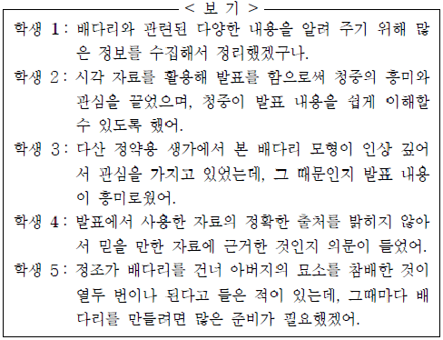
- 학생 1은 발표자의 준비 과정을 추측하며 들었다.
- 학생 2는 매체 자료 활용의 효과에 주목하며 들었다.
- 학생 3은 발표 내용에 대해 새로운 가치를 부여하며 들었다.
- 학생 4는 발표에 활용된 자료의 신뢰성을 점검하며 들었다.
- 학생 5는 발표 내용을 자신의 배경 지식과 관련지어 들었다.
(정답률: 알수없음)
3. 위 내용과 <보기>를 바탕으로 교지의 기사를 작성하기 위해 나눈 의견으로 적절하지 않은 것은?(4번 공통지문 문제)
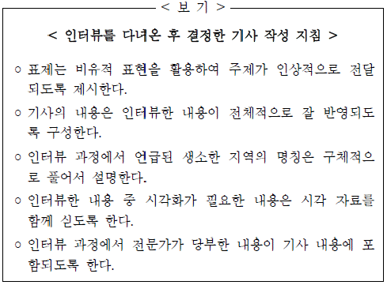
- 세준: 우리에게 잘 알려져 있지 않았던 마야 문명을 소개하는 것이니까 표제는 ‘고대 문명의 숨은 보석, 마야 문명을 찾아서’로 하면 좋을 것 같아.
- 정훈: 인터뷰한 내용은 크게 고대 문명의 일반적 특징과 마야의 역사에 대한 것으로 볼 수 있으니까 기사 내용도 이에 따라 두 부분으로 나누어 구성하면 좋겠어.
- 수연: ‘메소아메리카’가 어느 지역인지 모르는 친구들이 많을테니까 이 지역에 속하는 국가들을 구체적으로 함께 언급해주는 게 좋겠어.
- 보미: ‘마야 문자’와 관련된 내용은 시각화를 통해 효과적으로 전달할 수 있으니까 소책자에 나와 있는 사진을 함께 싣도록 하는 게 좋겠어.
- 민희: 학생들이 마야 문명에 대해 더 많은 관심을 가질 수 있도록 해 달라고 한 학예 연구사님의 말씀을 기사의 마무리 부분에 실으면 좋겠어.
(정답률: 알수없음)
4. 다음은 (나)를 쓰는 과정에서 세운 글쓰기 계획과 그 계획을 점검ㆍ조정한 결과이다. (나)로 미루어 볼 때, 적절하지 않은 것은? [3점](6번 공통지문 문제)
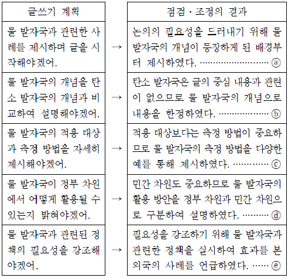
- ⓐ
- ⓑ
- ⓒ
- ⓓ
- ⓔ
(정답률: 알수없음)
5. (나)의 ㉠~㉤을 고쳐쓰기 위한 방안으로 적절하지 않은 것은?(6번 공통지문 문제)
- ㉠: 피동 표현이 중복되었으므로 ‘악화될’로 고친다.
- ㉡: 문단의 통일성을 고려하여 삭제한다.
- ㉢: 단어의 사용이 잘못되었으므로 ‘산출’로 고친다.
- ㉣: 불필요하게 의미가 중복되었으므로 ‘오염된 물을’로 고친다.
- ㉤: 문장의 연결 관계가 어색하므로 ‘그러나’로 고친다.
(정답률: 알수없음)
6. 다음은 작문 과제 2 를 수행하기 위해 세운 계획과 이것을 반영한 학생의 글이다. ㉠~ ㉤ 중 반영되지 않은 것은?(9번 공통지문 문제)
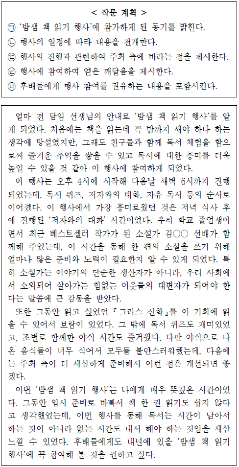
- ㉠
- ㉡
- ㉢
- ㉣
- ㉤
(정답률: 알수없음)
7. <보기>의 ㉠과 ㉡에 해당하는 예가 바르게 짝지어진 것은? (순서대로 ㉠, ㉡)
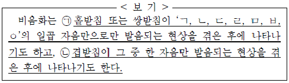
- 깎는[깡는], 흙만[흥만]
- 끝물[끈물], 앉자[안짜]
- 듣는[든는], 읊는[음는]
- 숯내[순내], 닳은[다른]
- 앞마당[암마당], 값이[갑씨]
(정답률: 알수없음)
8. <보기>를 바탕으로 하여 조사의 특성에 대해 탐구한 내용이 적절하지 않은 것은?
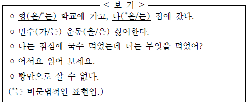
- 격 조사 자리에 보조사가 올 수도 있군.
- 격 조사는 담화 상황에 따라 생략할 수도 있군.
- 앞에 오는 말의 받침 유무에 따라 조사를 선택하기도 하는군.
- 보조사는 체언뿐 아니라 부사 뒤에도 붙을 수 있군.
- 보조사는 격 조사와 결합할 때 격 조사 뒤에만 붙을 수 있군.
(정답률: 알수없음)
9. <보기>를 이해한 내용으로 적절한 것은? [3점]
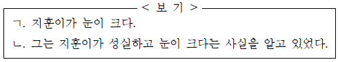
- ㄱ의 ‘크다’와 ㄴ의 ‘알고 있었다’는 전체 문장의 서술어 역할을 한다.
- ㄱ은 주어와 서술어의 관계가 한 번만 나타나므로 홑문장이다.
- ㄴ의 ‘성실하고’와 ‘크다’의 주어는 모두 ‘지훈이가’로 동일하다.
- ㄴ의 안긴문장에서 앞뒤 절은 종속적으로 이어져 있다.
- ㄴ의 안긴문장은 목적어를 가지지 않는다.
(정답률: 알수없음)
10. <보기>의 국어사전 자료를 탐구한 내용으로 적절하지 않은 것은?
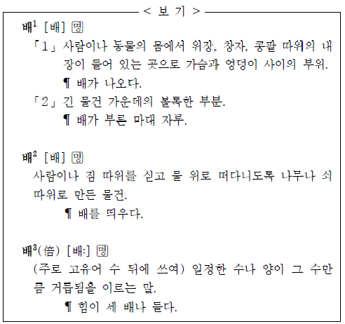
- ‘배1’은 하나의 표제어 아래 여러 뜻을 지니고 있으므로 다의어라고 볼 수 있겠군.
- ‘배1’의 ｢2 ｣의 용례로는 ‘배가 불룩한 돌기둥’을 들 수 있군.
- ‘배2를 활용한 속담으로 ‘사공이 많으면 배가 산으로 간다’를 들 수 있군.
- ‘배3’은 소리의 길이에 의해 ‘배1’, ‘배2’와 의미가 변별될 수 있겠군.
- ‘배1’, ‘배2’, ‘배3’은 모두 의미적 연관성이 있으므로 사전에 각각 등재하는군.
(정답률: 알수없음)
11. <보기>의 ㉠∼ ㉤은 모두 중의적인 문장이다. 괄호의 의미만을 나타내도록 수정한 방법으로 적절하지 않은 것은?
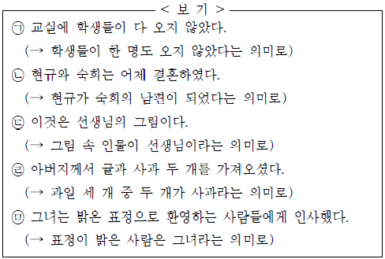
- ㉠: ‘않았다’를 ‘못했다’로 바꾼다.
- ㉡: ‘현규와 숙희는’을 ‘현규는 숙희와’로 교체한다.
- ㉢: ‘선생님의’를 ‘선생님을 그린’으로 교체한다.
- ㉣: ‘귤과 사과 두 개’를 ‘귤 한 개와 사과 두 개’로 바꾼다.
- ㉤: ‘밝은 표정으로’를 ‘사람들에게’의 뒤로 옮긴다.
(정답률: 알수없음)
12. 윗글의 내용과 부합하지 않는 것은?(16번 공통지문 문제)
- 구름은 수적이 충돌과 병합의 과정을 통해 성장하여 만들어 진다.
- 순수한 물로 만들어진 수적보다 용질이 녹아 있는 수적이 성장하기에 더 용이하다.
- 실제 대기의 응결핵은 자연적으로 생성되기도 하지만 대기 오염의 영향으로 생성되기도 한다.
- 대기가 냉각되면 포화 수증기압이 높아져 수적이 구름으로 형성되는 것에 도움을 줄 수 있다.
- 포화 수증기압은 대기가 현재 가지고 있는 수증기압이 아니라 최대로 가질 수 있는 수증기압을 나타낸다.
(정답률: 알수없음)
13. ㉠에 대한 설명으로 옳은 것은?(16번 공통지문 문제)
- ㉠은 구름이나 안개 형성에 있어서 응결핵의 역할을 하는 것으로서, 깨끗한 대기일수록 풍부하게 분포하고 있다.
- ㉠은 에어로졸이 응결에 미치는 영향을 보여 주는 것으로서, ㉠으로 인해 과포화가 아닌 상태에서도 응결이 일어난다.
- ㉠은 수적의 형성에 응결핵의 역할이 중요하다는 것을 보여주는 것으로서, ㉠의 크기가 작을수록 응결이 쉽게 일어난다.
- ㉠은 공기 속에 포함된 수적의 포화 상태를 보여 주는 것으로서, ㉠으로 인해 수적은 상대 습도가 100 % 이상인 곳에서만 존재한다.
- ㉠은 대기 속에 존재하는 수증기 분자의 크기를 보여 주는 것으로서, 실제 대기에서 응결이 일어나려면 수증기 분자가 커야 한다.
(정답률: 알수없음)
14. 윗글을 바탕으로 <보기>를 이해할 때, 적절하지 않은 것은? [3점](16번 공통지문 문제)
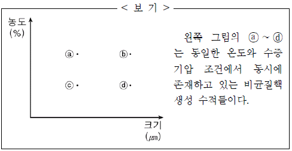
- 표면 장력이 끼치는 영향은 ⓐ보다 ⓑ에서 더 작다.
- ⓐ와 ⓑ에서의 용질 효과는 수적의 성장에 필요한 수증기압의 증가 효과를 나타낸다.
- 용질 효과는 ⓒ에서보다 ⓑ에서 더 크므로, ⓑ의 수적 성장 가능성이 더 높다.
- 곡률 효과는 ⓓ에서보다 ⓒ에서 더 크므로, ⓓ의 수적 성장 가능성이 더 높다.
- ⓐ ∼ⓓ는 대기가 수증기로 포화되지 않은 상태에서도 만들어진다.
(정답률: 알수없음)
15. ㉠의 이유로 가장 적절한 것은?(20번 공통지문 문제)
- 저항 값이 커서 구조체와 지지대의 온도를 증가시키는 데 효과적이기 때문이다.
- 구조체가 적외선 복사 에너지의 증가에도 일정한 온도를 유지할 수 있게 하기 때문이다.
- 구조체의 출력 전압을 낮추어 신호처리회로기판에 흐르는 전류량을 감소시키기 때문이다.
- 온도 증가에도 저항 값의 변화가 없어 일정한 전류를 신호처리회로기판에 공급할 수 있기 때문이다.
- 온도 증가에 따른 전기 저항의 감소 비율이 커서 피사체의 온도 차이를 쉽게 구별할 수 있게 하기 때문이다.
(정답률: 알수없음)
16. 윗글을 바탕으로 <보기>에 대해 설명한 내용으로 올바르지 않은 것은?(20번 공통지문 문제)
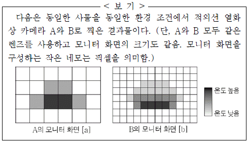
- A는 B보다 마이크로볼로미터의 개수가 더 많겠군.
- B가 A보다 사물의 표면 온도를 더 세분화하여 보여 주는군.
- A와 B는 모두 사물에서 방출된 적외선 복사 에너지를 검출해 A는 [a]를, B는 [b]를 구현하는군.
- [a]와 [b] 모두 프로그램을 통해 온도 값을 보정한 결과이겠군.
- [a]와 [b] 각각에서 음영이 진한 픽셀은 흐린 픽셀보다 적외선 감지 재료의 온도가 높음을 보여 주는군.
(정답률: 알수없음)
17. ‘개정 한계설’의 입장에서 <보기>를 이해한 내용으로 가장 적절한 것은?(23번 공통지문 문제)
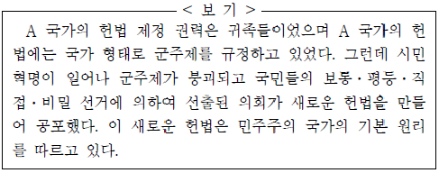
- 기존 헌법의 가치 질서를 유지하므로 헌법의 파기가 발생한 것이다.
- 헌법 제정 권력이 바뀌지 않았으므로 헌법의 개정이 발생한 것이다.
- 의회가 새로운 헌법을 만들었으므로 헌법의 개정이 발생한 것이다.
- 군주제였던 국가 형태가 민주제로 바뀌었으므로 헌법의 개정이 발생한 것이다.
- 기존의 헌법이 소멸되고 헌법 제정 권력이 바뀌었으므로 헌법의 파기가 발생한 것이다.
(정답률: 알수없음)
18. <보기>를 통해 ㉠과 ㉡을 이해한 내용으로 적절하지 않은 것은? [3점](23번 공통지문 문제)
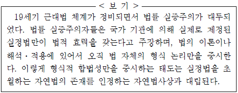
- 형식적 합법성만을 중시하는 이론이나 해석에서는 ㉠을 지지하겠군.
- 실제로 제정된 실정법만이 효력을 갖는다고 보는 입장에서는 ㉠을 인정하겠군.
- 법률 실증주의자들은 법 자체의 형식 논리를 중요시하므로 ㉠을 주장하겠군.
- 헌법 위에 자연법이 존재한다고 보는 학자들은 자연법사상을 ㉡의 근거로 삼겠군.
- 실정법을 초월하는 법의 존재를 인정하지 않는 관점의 학자들은 ㉡에 수긍하겠군.
(정답률: 알수없음)
19. 문맥상 ⓐ~ ⓔ와 바꿔 쓰기에 가장 적절한 것은?(23번 공통지문 문제)
- ⓐ : 상등하다
- ⓑ : 분포된다
- ⓒ : 피력한다
- ⓓ : 승계할지라도
- ⓔ : 소급되는
(정답률: 알수없음)
20. 윗글을 참고하여 <보기>를 해석한 내용으로 적절하지 않은 것은? [3점](27번 공통지문 문제)
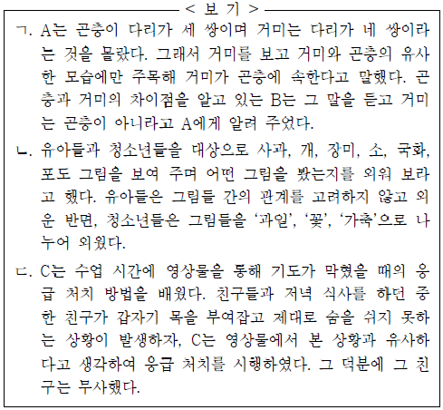
- ㄱ에서 A는 거미가 지니고 있는 곤충과의 유사한 모습에 주목하여 범주화했겠군.
- ㄱ에서 B는 거미의 개념과 관련해 곤충과 구별되는 거미의 속성을 이해하고 있었기 때문에 A가 잘못 범주화한 것을 바로잡아 줄 수 있었겠군.
- ㄴ에서 그림의 개수가 더 많아지면 ‘유아들’이 제시된 그림들을 모두 기억하는 데 겪는 어려움이 더 커질 수 있겠군.
- ㄴ에서 ‘청소년들’은 ‘사과, 개, 장미, 소, 국화, 포도’ 각각의 그림 속 대상이 지닌 독특한 고유의 특성에 주목해 외웠겠군.
- ㄷ에서 C는 ‘친구’가 숨을 못 쉬게 된 것을 기도가 막혔을 때의 증상으로 범주화했기 때문에 영상물을 본 경험으로부터 도움을 받을 수 있었겠군.
(정답률: 알수없음)
21. 윗글을 토대로 <보기>에 대해 이해한 내용으로 적절한 것은?(27번 공통지문 문제)
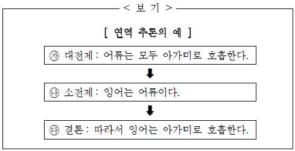
- ㉮에서 ‘아가미로 호흡한다’는 것은 ‘어류’의 외연에 해당한다.
- ㉯는 ‘어류’의 모든 내포가 ‘잉어’의 모든 내포와 일치한다는 것을 전제로 삼아 범주화한 것이다.
- ㉰는 ‘어류’라는 범주에 해당하는 속성이 ‘잉어’에 부여되었기 때문에 도출되는 것이다.
- ㉮와 ㉯가 각각 대전제와 소전제가 되는 것은 ‘잉어’의 외연이 ‘어류’의 외연보다 크기 때문이다.
- ㉯에서 ‘잉어’는 ‘어류’의 상위 범주에 해당하기 때문에 ㉰에서 ‘아가미로 호흡한다’는 속성을 가진다.
(정답률: 알수없음)
22. ㉠~ ㉤의 사전적 의미로 적절하지 않은 것은?(27번 공통지문 문제)
- ㉠: 어떤 대상을 가리켜 이르는 일.
- ㉡: 가리켜 보임.
- ㉢: 보다 뛰어난 힘이나 재주로 남을 눌러 꼼짝 못하게 함.
- ㉣: 어떤 일을 직접 당하기 전에 미리 생각하여 둠.
- ㉤: 보호하고 간수해서 남김.
(정답률: 알수없음)
23. <보기>를 참고하여 (가), (나)를 감상한 내용으로 적절하지 않은 것은? [3점](31번 공통지문 문제)
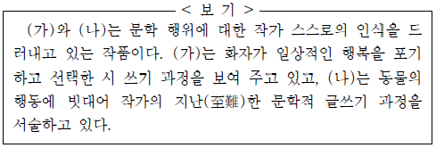
- (가)에서 ‘벚꽃’, ‘술’, ‘나의 사람’은 일상적인 행복에 해당하는 것이겠군.
- (가)에서 화자가 ‘멋진 약속을 깨뜨리고/ 시를 쓴다.’는 것에서 문학 행위에 대한 화자의 의지적 태도를 읽어 낼 수 있겠군.
- (가)에서 ‘집 잃은 아이’는 시를 쓰기 위해 방황했던 과거 삶에 대한 화자의 회한을 나타내는 것이겠군.
- (나)에서 ‘몸속 깊은 곳을 들락거리며 쉼 없이 연상의 물질’을 하는 것은 작가가 글을 쓰는 과정에서 끊임없이 노력하는 것을 의미하겠군.
- (나)에서 ‘언어라는 연약한 물풀에 몸을 감고 밤새 뒤척이’는 모습은 문학의 언어에 대한 작가의 고뇌를 드러내는 것이겠군.
(정답률: 알수없음)
24. (가)의 ㉠을 (나)와 연결해서 이해한 것으로 가장 적절한 것은?
- 해달이 ‘조개를 내리쳐’ ‘부드러운 속살’을 얻는 것과 같이, ㉠은 시인이 노력 끝에 예술적 가치를 얻게 됨을 의미한다.
- ‘새끼들을 먹여 살리기 위해’ 애쓰는 어미 해달의 모습과 같이, ㉠은 독자를 위해 가져야 할 시인의 희생정신을 의미한다.
- ‘욕조를 타고 대서양을 건너는 일’과 같이, ㉠은 표현할 수 없는 것을 언어로 표현하려는 시인의 무모함을 의미한다.
- ‘아기 해달을 물 위에 발랑 뒤집어 눕혀 놓’은 어미 해달처럼, ㉠은 시인에게 다른 작품을 모방하지 않으려는 도덕성이 필요함을 의미한다.
- ‘폭풍이 몰아치던 밤 파도에 휩쓸려 떠내려’간 어미 해달처럼 되지 않기 위해서, ㉠은 시인이 문학의 언어를 선택할 때 시대정신을 고려해야 함을 의미한다.
(정답률: 알수없음)
25. 윗글의 인물에 대한 이해로 적절하지 않은 것은?(34번 공통지문 문제)
- 임금은 왕위를 잃은 후 자신의 처지를 슬퍼하고 있다.
- 자허는 신하들 사이의 오해를 해소하기 위해 애쓰고 있다.
- 기이한 사내는 노래를 통해 자신의 충의를 드러내고 있다.
- 복건 쓴 이는 임금의 지적을 받자 자신의 잘못을 인정하고 있다.
- 첫째 자리에 앉은 사람은 임금을 제대로 보좌하지 못한 것을 안타까워하고 있다.
(정답률: 알수없음)
26. <보기>를 참고하여 윗글을 감상한 내용으로 적절하지 않은 것은? [3점](34번 공통지문 문제)
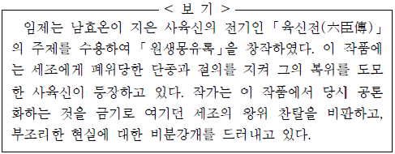
- ‘임금’은 단종을, ‘예닐곱 신하’는 단종에게 절의를 지킨 사람들을 가리키는 것으로 볼 수 있군.
- ‘새 임금은 거짓’은 작가가 등장인물을 통해 세조에 대한 시각을 드러낸 것으로 볼 수 있군.
- ‘썩은 선비들’이라는 ‘기이한 사내’의 질책에는 절의를 지키지 않고 세조를 섬기는 사람들에 대한 비분강개가 담긴 것으로 볼 수 있군.
- ‘한바탕의 꿈’을 통해 당시에 금기시되던 세조의 왕위 찬탈을 비판하려는 의도를 드러낸 것으로 볼 수 있군.
- ‘통분한 어조’로 매월거사가 한 말은 부조리한 현실에 대한 한탄을 드러낸 것으로 볼 수 있군.
(정답률: 알수없음)
27. 윗글의 ‘자허’가 ‘임금’에게 편지를 쓴다고 가정할 때, 그 내용으로 적절하지 않은 것은?(34번 공통지문 문제)
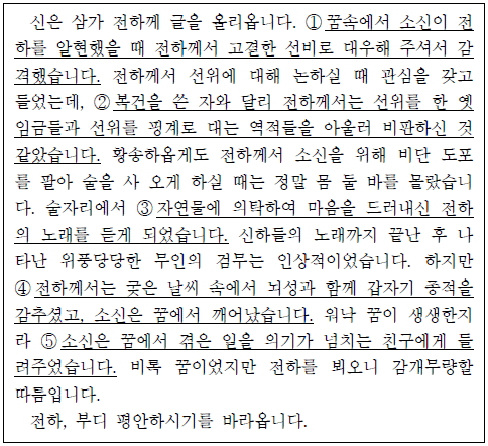
- ①
- ②
- ③
- ④
- ⑤
(정답률: 알수없음)
28. <보기>를 참고하여 윗글을 이해한 내용으로 적절하지 않은 것은? [3점](38번 공통지문 문제)
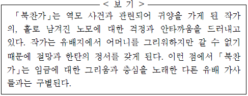
- ‘밤밤마다 꿈에 뵈니’에는 어머니에 대한 화자의 간절한 그리움이 담겨 있군.
- ‘산과 강물 막힌 길에 일반고사 뉘 헤올고’에는 노모에게 소식을 전할 수 없는 화자의 절망감이 담겨 있군.
- ‘여의 잃은 용’에는 충성스러운 신하를 귀양 보낸 임금에 대한 화자의 안타까움이 표현되어 있군.
- ‘어느 때에 주무시며 무엇을 잡숫는고’에는 홀로 남겨진 노모에 대한 화자의 걱정이 드러나 있군.
- ‘나 아니면 뉘 뫼시며’에는 노모에게 효를 다하지 못하는 화자의 안타까움이 나타나 있군.
(정답률: 알수없음)
29. 윗글의 ㉠과 <보기>의 ⓐ를 비교한 내용으로 가장 적절한 것은?(38번 공통지문 문제)
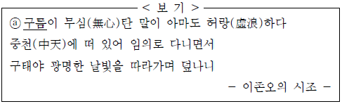
- ㉠은 화자의 염려가 투영된 소재이고, ⓐ는 화자의 소망이 의탁된 소재이다.
- ㉠은 화자가 부러워하는 대상이고, ⓐ는 화자가 비판적으로 인식하는 대상이다.
- ㉠은 화자가 처한 불행한 현실을 드러내고, ⓐ는 화자가 추구하는 세계를 드러낸다.
- ㉠은 화자로 하여금 추억을 떠올리게 하고, ⓐ는 화자로 하여금 탈속적 세계를 떠올리게 한다.
- ㉠은 화자에게 현실 극복 의지를 불러일으키고, ⓐ는 화자에게 현실에 대한 체념의 계기를 마련해 준다.
(정답률: 알수없음)
30. [A]와 [B]에 대한 설명으로 적절한 것은?(41번 공통지문 문제)
- [A], [B]에는 모두 현세를 위해 행한 노력이 강조되어 있다.
- [A], [B]에는 모두 자신과 현세가 처한 부정적 상황에 대한 걱정이 담겨 있다.
- [A]와 달리 [B]에는 현세에 대한 비판적 태도가 드러나 있다.
- [A]와 달리 [B]에는 현세에 대한 인식 변화가 제시되어 있다.
- [B]와 달리 [A]에는 현세의 상황에 대한 호기심이 표현되어 있다.
(정답률: 알수없음)
31. <보기>를 참고하여 윗글을 이해한 내용으로 적절하지 않은 것은?(41번 공통지문 문제)
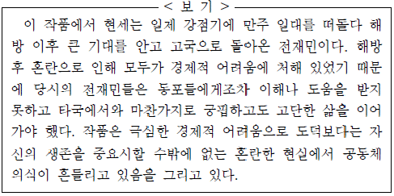
- 집주름 영감과 함께 공동체 의식을 바로 세우려 했던 현세의 고뇌에 찬 ‘눈물’을 통해 도덕이 무너진 혼란한 현실을 엿볼 수 있다.
- 자신의 ‘악’이 ‘다 죽어 가는 실뱀의 악’일 뿐임을 깨닫는 현세에게서 당대 현실 속에 무력할 수밖에 없는 전재민의 처지를 엿볼 수 있다.
- 두갑이에게 속마음을 표현하지 못하고 ‘돈 묶음만은 집어 쥔채’ 자리를 떠나는 현세에게서 전재민의 궁핍한 처지를 엿볼 수 있다.
- ‘우린 전재민이 아니웨까?’라는 현세의 말에서 경제적 어려움에 대해 동포들에게 이해를 구하려는 전재민의 모습을 엿볼수 있다.
- 자신의 살 곳을 마련하기 위해 어려운 처지의 ‘셋방 사람들’을 내쫓는 역할을 한 현세에게서 도덕보다 자신의 생존을 우선시할 수밖에 없었던 당대 사람들의 모습을 엿볼 수 있다.
(정답률: 알수없음)
32. <보기>를 참고하여 윗글을 감상한 내용으로 가장 적절한 것은? [3점](41번 공통지문 문제)
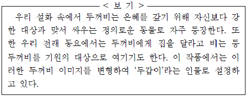
- 설화의 두꺼비가 강자 앞에서 나약했던 것처럼, 윗글에서도 두갑이를 집주인 앞에서 비굴하게 구는 것으로 그려냈군.
- 설화에서 두꺼비가 은혜를 갚는다는 내용과 달리, 윗글에서는 현세가 두갑이에게 은혜를 갚는다는 내용으로 구성했군.
- 설화와 전래 동요에 두꺼비가 긍정적으로 묘사된 것처럼, 윗글에서도 독자들이 두갑이에게 희망적 이미지를 느낄 수 있도록 형상화했군.
- 설화에서 두꺼비가 정의로운 존재로 여겨진 것과는 달리, 윗글에서 현세는 자신의 어려운 처지를 두갑이가 이용했을 뿐임을 깨닫는 것으로 설정했군.
- 전래 동요에서 두꺼비에게 집을 달라고 기원한 것처럼, 윗글에서도 현세는 두갑이가 방을 얻어 주리라는 기대를 끝까지 버리지 않는 것으로 구현했군.
(정답률: 알수없음)
33. 윗글에 대한 독자의 반응으로 적절하지 않은 것은?(41번 공통지문 문제)
- 집주름 영감과 대화를 나누고 있는 현세는 기진맥진(氣盡脈盡)해 있군.
- 현세는 두갑이의 말을 듣고 그에게 동병상련(同病相憐)을 느끼고 있군.
- 집주름 영감은 현세에게 돈을 더 받기 위해 애걸복걸(哀乞伏乞)하고 있군.
- 집주름 영감의 말에 나타난 집주름 영감의 집안 상황은 가히설상가상(雪上加霜)이군.
- 두갑이는 현세에게 자신이 나중에 방을 얻어 주겠다며 호언장담(豪言壯談)하고 있군.
(정답률: 알수없음)